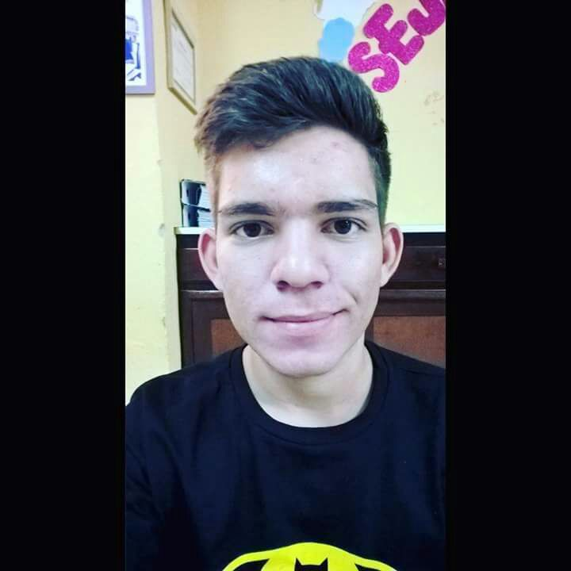
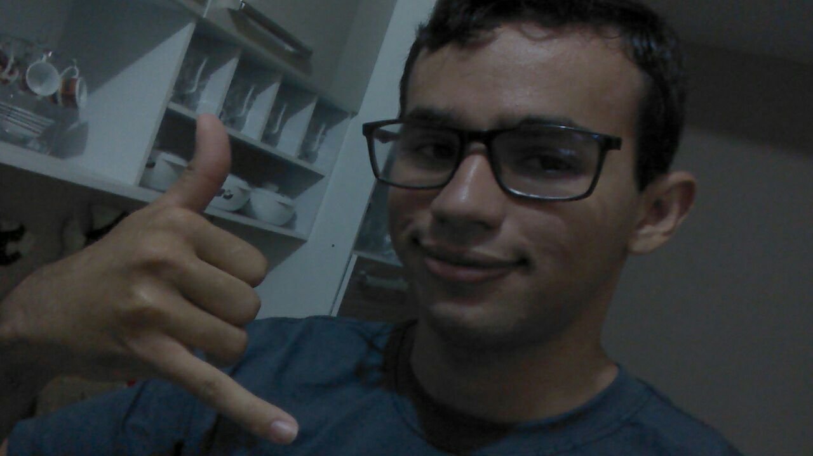
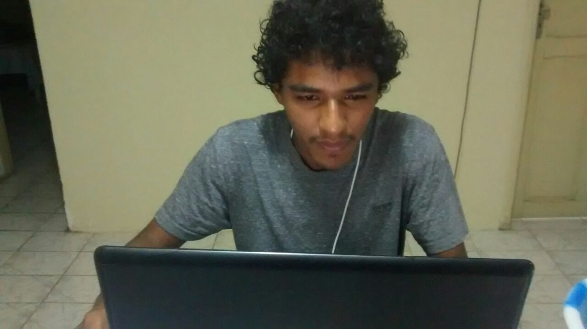

| Alimpio Brito Rodigues | Idade: 18 | Curso: CC | Telefone: (88)99613-1518 | Email: Alimpiok9@hotmail.com |
| Antonio Everton Cosmo do Nascimento Pereira | Idade: 18 | Curso: CC | Telefone: (88)99458-9168 | Email: Cosmok9@hotmail.com |
| Emanuel Alves Bezerra | Idade: 17 | Curso: CC | Telefone: (88)99660-9418 | Email: Emanuelk9@hotmail.com |
Alimpio Brito Rodrigues, natural da cidade de poranga Ceará, nascido em 01 do 10 de 1998. Cursou o ensino fundamental é médio todo em escola pública. Aos 18 anos de idade ingressou na universidade Federal do Ceará (UFC), no curso de ciência da Computação, no semestre 2017.1, através do Enem - Exame Nacional do Ensino Médio - entrou em 2° lugar, atualmente encontra-se, reprovando em toda a matemática do curso, mais o resto tá indo.
Antonio Everton Cosmo do Nascimento Pereira natural da cidade de Crateús Ceará, nascido em 29 do 04 de 1999. Cursou o ensino fundamental e médio todo em escola publica. Aos 17 anos de idade ingressou na Universidade Federal do Ceará (UFC), no curso de Ciência da Computação, no semestre 2017.1, através do Enem -Exame Nacional do Ensino Médio- entrou em 6° lugar, atualmente encontra-se aprovado em todas as cadeiras! "a vida é que nem café, pois depois que você bebe, você fica ligadão".
Emanoel Bezerra Alves natural da cidade de Poranga Ceará, nascido em 27 do 10 de 1999. Cursou o ensino fundamental e médio todo em escola publica. Aos 17 anos de idade ingressou na Universidade Federal do Ceará (UFC), no curso de Ciência da Computação, no semestre 2017.1, através do Enem -Exame Nacional do Ensino Médio- entrou em 4° lugar, atualmente encontra-se ,quase reprovado em 3 cadeira, mas vida que segue.
O campus da UFC(Universidade Federal do Ceará) de Crateús tem Maria Elias Soares como Diretora.
Licenciada em Letras e Pedagogia pela Universidade Estadual do Ceará, e concluiu o bacharelado em Comunicação Social e Direito, pela Universidade Federal do Ceará. Mestra e Doutora em Letras (PUC/RJ).
O corpo docente é composto por: Lívio Antônio Melo Freire, André Meireles de Andrade, Antônio Francisco Gomes Furtado Filho, José Wellington Franco da Silva, Luísa Gardênia Alves Tomé, Marciel Barros Pereira, Alan Michell Barros Alexandre, Amanda Drielly Pires Venceslau, Antonio Emerson Barros Tomaz, Arnaldo Barreto Vila Nova, Bruno de Castro Honorato Silva, Carlos David Rodrigues Melo, Fabio da Costa Ribeiro, Filipe Fernandes dos Santos Brasil de Matos, Francisco Yure Santos do Nascimento, Giannini Italino Alves Vieira, Italo Mendes da Silva Ribeiro, Janaina Lopes Leitinho, Laise Lima de Carvalho Sousa, Leandro Soares Moreira, Lílian de Oliveira Carneiro, Luiz Alberto do Carmo Viana, Márcio de Melo Freire, Rafael dos Santos da Silva, Rennan Ferreira Dantas, Roberto Cabral Rabêlo Filho, Sandro Vagner de Lima e Sebastião Rodrigo Cortez de Sousa.
O campus de Crateús encontra-se no seguinte endereço.
Endereço: Rodovia BR-226, Km 03, s/n - São Vicente, Crateús - CE, 63700-000 Telefone: (88) 3691-1029
"As máquinas me surpreendem com muita frequência.” Alan Turing (Cientista computacional e matemático britânico, 1912 - 1954)
  